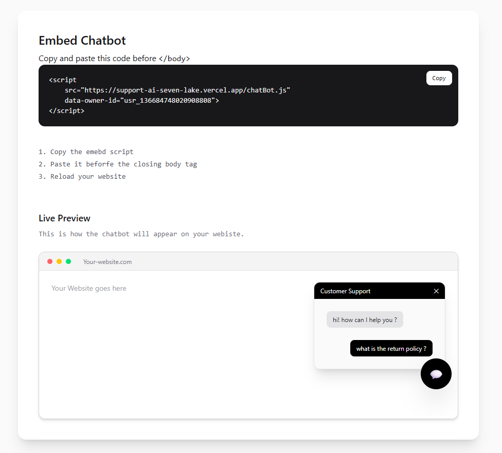

Abhishek Etam
Software Engineer & Power Apps Developer •
Pune
Currently working from Heaven
I started college wanting to understand how things actually work, not just how to use them. Two years into a CS
degree, that curiosity turned into building — an AI system that reads invoices and catches errors people miss,
a chatbot
None of it started as a class assignment. Each one began with "I wonder if I can build this," and turned into late nights debugging things I didn't fully understand yet — which, looking back, is where most of the actual learning happened. I'm still early in this — 3rd year.
more building ahead of me than behind me — but I'd rather show what I've made than talk about what I plan to make. If something here catches your interest, I'd love to talk about how it was built.

chatbot ui specs
next.js
Gemini Ai Model
typescript
embed easily. https://support-ai-seven-lake.vercel.app/
a chatbot that works across different businesses without breaking, a live dashboard that tracks weather and air
quality across cities in real time.
Gemini Ai Model
typescript
embed easily. https://support-ai-seven-lake.vercel.app/
None of it started as a class assignment. Each one began with "I wonder if I can build this," and turned into late nights debugging things I didn't fully understand yet — which, looking back, is where most of the actual learning happened. I'm still early in this — 3rd year.
more building ahead of me than behind me — but I'd rather show what I've made than talk about what I plan to make. If something here catches your interest, I'd love to talk about how it was built.
EDUCATION
B.Tech Information Technology & CS Major.
DPCOE, Pune · 2028
Highschool
Netaji Highschool, Pune · 2024
Professional Work Experience
WORK.
Personal Code Repositories
PROJECTS.
CONTACT.
Here.